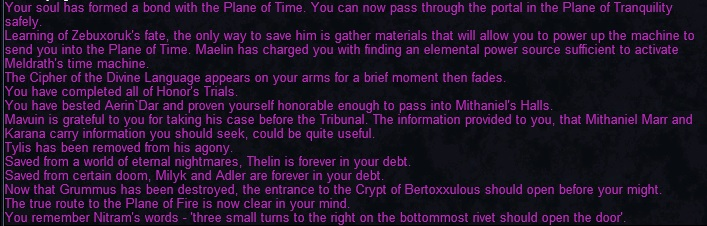

Guide Overview – Read First!
1) The format for this guide is:
- NPC dialogue or zoning steps
- Boss kill / fight steps
- Some steps are not strictly required flags — only enough people need to do these to keep the raid moving forward.
There are two Quarm Specific commands that you can use to track your progress in Planes of Power:
- #popflags (shows your Planes of Power progression flags by tier: overview, 1–5, time or all. Example: #popflags 1)
- #timelockout [1-6] (shows your Plane of Time timeline.)
2) Flagging issues arise for two reasons:
- From not talking to the right NPC before or after killing a boss.
- From not zoning into a zone from another when you first get a flag (i.e. you must zone into Halls of Honor from Plane of Valor after killing Aerin’Dar for the first time).
3) There are two key NPC’s in Plane of Knowledge
- Seer Mal Nae`Shi
- Grand Librarian Maelin
Seer Mal Nae`Shi is located in the building next to the Plane of Tranquility zone. She can fix any flagging issues you may have if they get out of order.
Grand Libraria n Maelin is located at the top of of library elevator and is part of the flagging process. Mostly towards the later stages. He should at least be done before and after killing the Zek’s , and also after killing Saryrn. Possibly other times as well if you begin to run into flagging issues at any point. He cannot put your flags in order like the Seer can, but he is a common cause for flag issues.
If you are having a flagging issue you may have to go back and forth between Grand Librarian Maelin and Seer Mal Nae`Shi a couple times to fix your flags.
I recommend doing the steps below more than once throughout the flagging process. Especially if you begin to see “You’ve received a new checklist flag!” rather than “You’ve received a character flag!” :
- Locate Seer Mal Nae`Shi in the Plane of Knowledge. Be sure to sit down. Say “guided meditation” to see the status of your current flags. Say “unlock my memories” to get your flags in order. You may have to say this a few times and may get more than 1 flag. Repeat the phrases until you get no more flags.
- Say “Hail”, “what lore”, and “what information” to Grand Librarian Maelin at the top of the Plane of Knowledge Library elevator. You may have to say this a few times and may get more than 1 flag. Repeat the 3 phrases until you get all flags.
4) Now we can move onto the actual flagging process:
- NPC dialogue or zoning steps
- Boss kill / fight steps
- Some steps are not strictly required flags — only enough people need to do these to keep the raid moving forward.
Flag Checklist
Plane of Disease
- Say “what ward” to Adler Fuirstel in Plane of Tranquility outside Plane of Disease (You’ve received a character flag!)
- Kill Grummus and Hail a planar Projection (You’ve received a character flag!)
- Jump into pit that leads into Crypt of Decay from Plane of Disease.
Plane of Justice
- Speak to Mavuin in Plane of Justice. say “information” to receive flag (You’ve received a character flag!)
- Complete 1 of the 6 Trials in Plane of Justice, Loot Mark of XXX from trial boss
- Say “mavuin sent me” to one of the “The Tribunal” in the trial room. (You’ve received a character flag!)
- Go back to Mauvin and Hail him to receive a flag. (You’ve received a character flag!)
Plane of Innovation
- Optional – Kill Xanamech Nezmirthafen to get factory door key. At least 1 person will need this. Guide HERE.
- Say “I will test the machine” to Giwin Mirakon inside the factory door. (You’ve received a character flag!)
- Kill Manaetic Behemoth and Hail Giwin Mirakon (he spawns near boss room) to receive character flag. (You’ve received a character flag!)
Plane of Nightmare
- Say “Hail”, then “tortured by nightmares” to Adroha Jezith in Plane of Tranquility in the Sick Bay. (You’ve received a character flag!)
- Complete Hedge Maze in Plane of Nightmare. Hail Thelin Poxbourne at the end of the event to zone out. (You’ve received a character flag!)
- Kill Terris Thule in Plane of Nightmare B and Hail a planar projection. (You’ve received a character flag!)
- Go back to Plane of Tranquility and Hail Elder Poxbourne. (You’ve received a character flag!)
Crypt of Decay
- Hail Elder Fuirstel in Plane of Tranquility in the Sick Bay. Must have completed Grummus Flag to get a response. (You’ve received a character flag!)
- Complete Carprin Event and Hail Tarkil Adan in Crypt of Decay to gain Access to Lower Floor. (Key to the lower depths of the Ruins of Lxanvom Keyring) (You’ve received a character flag!)
- Complete Bertoxxulous Event in Crypt of Decay and Hail a planar projection. (You’ve received a character flag!)
- Hail Elder Fuirstel again in Plane of Tranquility in the Sick Bay. (You’ve received a character flag!)
Plane of Torment
Note: To be able to speak to the NPCs in Plane of Tranquility to start the Torment flagging process you need to have completed PoDisease/Crypt of Decay/PoNightmare flags correctly. You can still kill Keeper of Sorrows and Saryrn ahead of time if you get piggied into PoTorment but you’ll need to fix your flags afterwards. The person requesting the Keeper of Sorrows mini-mission must be fully flagged up to this point to request it (All up to and including both Terris Thule and Bertoxxulous, and subsequent dialogue). This is where a lot of people get their flags messed up.
- Say “i will go” to Fahlia Shadyglade in Plane of Tranquility. She is in the Sick Bay. (You’ve received a character flag!)
- Optional – Quest for A Screaming Sphere (Key) to open the door to Saryrn’s Tower in Plane of Torment. Only 1 person needs this. Guide HERE.
- Complete the Keeper of Sorrows Event in Plane of Torment and Hail Tylis Newleaf who spawns at the end of the event. (You’ve received a character flag!)
- Kill Saryrn in Plane of Torment and Hail A Planar Projection. (You’ve received a character flag!)
- Go to Plane of Tranquility and Hail both Fahlia Shadyglade and Tylis Newleaf in the Sick Bay. Can this be skipped?
Plane of Storms
- Complete Askr the Lost’s Giant Collect Quest (Talisman of Thunderous Foyer Keyring). Guide HERE. (You’ve received a character flag!)
- Zone into Bastion of Thunder via stone in the middle of the zone from Plane of Storms. (You’ve received a character flag!)
Plane of Valor
- Optional – Obtain Crystalline Globe to open Aerin’Dar Door. At least 1 person will need this. Guide HERE.
- Kill Aerin’Dar and Hail a Planar Projection (You’ve received a character flag!)
- Zone into Halls of Honor via the Plane of Valor underground tunnel entrance. (You’ve received a character flag!)
Bastion of Thunder
- Optional – At least 1 person in the raid must be able to activate the stone to Agnarr’s Chamber using the Symbol of Torden Key. Guide HERE
- Complete Agnarr the Storm Lord event then say “I will follow the path of the Fallen.” to Karana (You’ve received a character flag!) Note: To zone out say “Send me on my path.” to Karana
Halls of Honor (HoHA)
- Complete Trial 1 (Northeast Trial – Dragon) then Hail Trydan Faye to receive flag emote: An ethereal mist descends from the air and surrounds your very being. Your body begins to emanate with the power of Trydan Faye.
- Complete Trial 2 (Northwest Trial – Save Villagers) then Hail Rhaliq Trell to receive flag emote: An ethereal mist descends from the air and surrounds your very being. Your body begins to emanate with the power of Rhaliq Trell.
- Complete Trial 3 (Southeast Trial – Save Single Villager) then Hail Alekson Garn to receive flag emote: An ethereal mist descends from the air and surrounds your very being. Your body begins to emanate with the power of Alekson Garn.
Temple of Marr (HoHB)
- Kill Lord Mithaniel Marr in Halls of honor B and Hail A Planar Projection (You’ve received a character flag!)
Plane of Tactics
- Kill Vallon Zek and Hail A Planar Projection (You’ve received a character flag!)
- Kill Tallon Zek and Hail A Planar Projection (You’ve received a character flag!)
- Kill Rallos Zek and Hail A Planar Projection (You’ve received a character flag!)
IMPORTANT: If you cannot zone into the Elemental Planes and have completed all flags and dialogue above, then you’ll likely need to go back and forth between Grand Librarian Maelin (at the top of the library elevator in PoK) and Seer Mal Nae`Shi MULTIPLE (2-3) times to fix all your flags. Say “hail”, Say “what lore”, and “what information” to Grand Librarian Maelin multiple times each time you visit him. Say the phrases until you receive no more character flags. Then go back to Seer Mal Nae`Shi to fix your flags. Rinse and repeat until you receive no more flags from Grand Librarian Maelin, and Seer Mal Nae`Shi has no more flag “fixes” for you. Sometimes Grand Librarian Maelin will have even more flags for you after you speak to Seer Mal Nae`Shi, so be sure to go back!
Solusek Ro Tower
- Kill all 5 Mini bosses and click through the stones after killing each one. You’ll also need all flags up to Rallos Zek to zone into Solusek Ro’s chamber. (5x You’ve received a character flag!)
- Xuzl
- Arlyxir
- Jiva
- Rizlona
- The Protector of Dresolik
- Kill Solusek Ro and Hail a Planar Projection (You’ve received a character flag!)
- Drop down into Lava Pit in Solusek Ro’s chamber to zone into Plane of Fire (No Flag here).
Elementals
Plane of Fire
- Kill Fennin Ro in Plane of Fire and Hail A Planar Projection to receive Globe of Dancing Flame.
Plane of Air
- Optional – Obtain Wind Etched Key to zone up to Xegony Island. 1 person per group will need the key. Not part of Planar Progression but is needed to get up to Xegony Island. Quest Guide HERE.
- Kill Xegony in Plane of Air and Hail A Planar Projection to receive Amorphous Cloud of Air.
Plane of Water
- Kill Coirnav in Plane of Water and Hail A Planar Projection to receive Sphere of Coalesced Water.
Plane of Earth
- Optional – Kill Tantisala Jaggedtooth in Plane of Earth A. Loot Gem-Etched Key. Only 1 person needs this to open the door to tunnel area.
- Complete the 4 ring events in Plane of EarthA to spawn A Mystical Arbitor of Earth. Kill it and Hail A Planar Planar Projection to receive Passkey of the Twelve on your Key Ring. Click the door nearby to enter Plane of Earth B.
- Kill The Rathe Council in Plane of Earth B and Hail A Planar Projection to receive Mound of Living Stone.
Plane of Time
- Optional – Craft Odylic Vial. Only 1 person needs this. It is a tradable 4-slot container
- Combine Globe of Dancing Flame, Amorphous Cloud of Air, Sphere of Coalesced Water, Mound of Living Stone in Odylic Vial to create Quintessence of Elements.
- Go to Plane of Innovation with your Quintessence of Elements. Say “yes” to Chronographer Muan to port up to PoTime Clocks. Say “researched” to Loreseeker Maelin. Click machine to zone into Plane of Time.
A fully flagged character looks like this when speaking to the Seer; this means if you see any of these emotes that’s the end of that flagging line:

Key Quests
The full step-by-step guides for each key quest now live on the dedicated Progression Quests page. Short summaries below — each links to its full guide.
The Crystalline Globe
Opens the Aerin`Dar door in Plane of Valor. Farm six items (three creature hearts and three Crystalline Globe pieces) across the zone, then work the NPC chain — Sergeant Johson Popoah, Paralin Notion, Master Sergeant Aaramis Daryln, and Captain Ryglot Cupperhide — to assemble the globe.
The Symbol of Torden
Grants access to Agnarr's Tower in the Bastion of Thunder. Collect the four elemental spheres (Blizzard, Lightning, Sandstorm, and Tornado) from the upper tower wings plus an Unadorned Symbol of Torden from any tower boss, then combine them.
The Wind Etched Key
Ports to Xegony Island in Plane of Air — one person can port up to a full group of six. Requires the Elemental Plane flag to get the Pouch of Swirling Winds from Sarhya the Dawnbreeze, then combine the four Mystical Essences (Wind, Smoke, Mist, and Dust) from the Avatar ring-event bosses into the pouch.
Talisman of the Thunderous Foyer
The Bastion of Thunder access flag, shown as an achievement. In Plane of Storms, farm the giant drops (Storm Giant Head, Storm Volaas Beard, Storm Satuur Sash, Storm Taarid Bone, and 2x Esoteric Medallion) and work through Askr the Lost's dialogue and bag combines to earn the character flag.
Watch
Sources: eqprogression.com guide pages — Planes of Power Planar Progression Flagging, Aerin`Dar Key (Crystalline Globe), Symbol of Torden (Agnarr’s Tower Access), Wind Etched Key (Key to Xegony’s Island), and Talisman of the Thunderous Foyer (Bastion of Thunder Access). Videos embedded from YouTube.